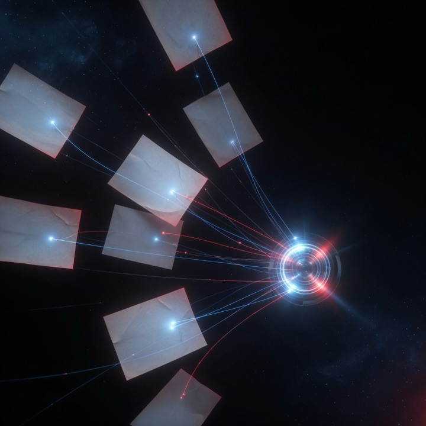
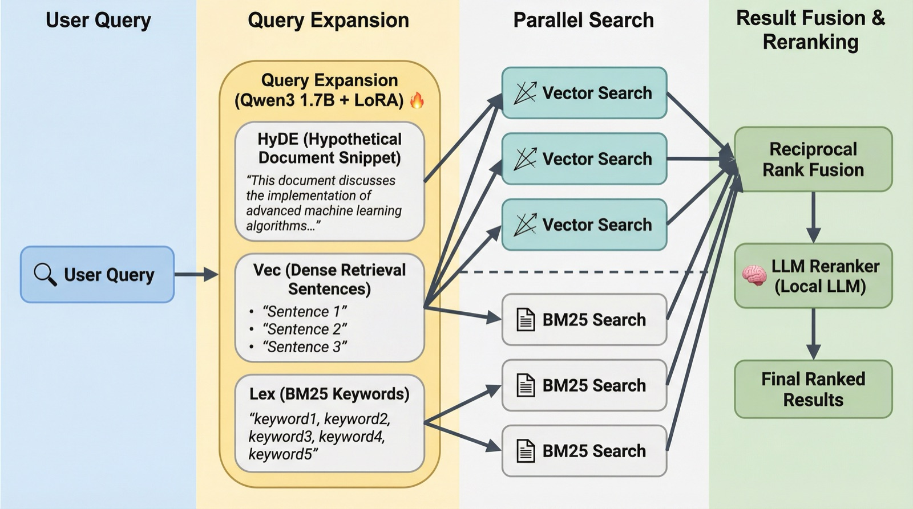

TypeScript · Python · MLX
QMD MLX Search
On-device hybrid search over notes and docs, extending the open-source QMD project with MLX-native embeddings for Apple Silicon.

Overview
QMD MLX Search builds on QMD, an open-source local search engine for markdown notes, meeting transcripts and documentation that combines BM25 full-text search, vector search and LLM re-ranking. This fork adds a second embedding backend: a dedicated Python server that runs embedding models directly on the Apple Silicon GPU through Apple’s MLX framework, alongside QMD’s existing GGUF path.
Highlights
- MLX-native embedding server supporting HuggingFace MLX models such as nomic-embed-text, bge-small and Qwen3 embeddings, with mean, CLS and last-token pooling plus L2 normalization.
- Binary Float32 transport (
/embed-bin) alongside JSON, plus optional MLX endpoints for re-ranking and query expansion. - SHA-256 embedding descriptors identify each vector space, so backend selection fails closed rather than mixing incompatible vectors.
- launchd daemon supervision, readiness and memory endpoints, and idle unloading of model weights to free unified memory.
- Measured on an Apple M2 Pro (32GB) with nomic-embed-text-v1.5 (768d, float16): ~3.7 ms per text at batch 1, and ~10.7 ms per batch of 32 (2,989 texts/sec) for bulk indexing.
- Works with QMD’s CLI, MCP server and TypeScript SDK; the MLX backend is enabled with a single environment variable or SDK option.
Stack
